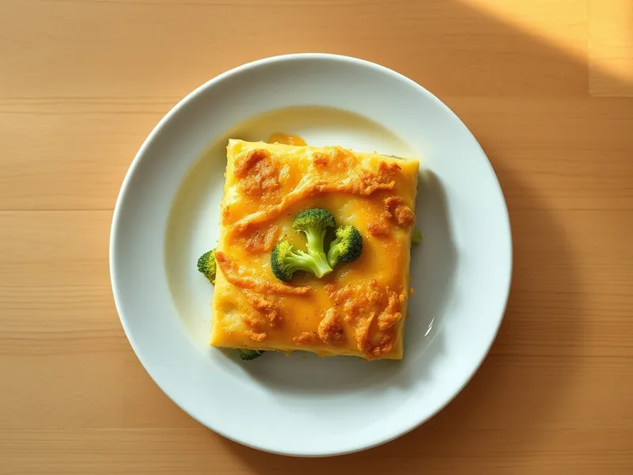

Фото: Иллюстрация ИИ, Cloudflare Workers AI
Запеканка из брокколи с яйцом и сыром
Брокколи в заливке из яиц и молока под сырной корочкой
30 мин2 порц.466 ккал на порциюБ 33 · Ж 30 · У 21Европейская кухня
Продукты на 2 порц.
- Брокколи500 г
- Яйцо куриное3 шт
- Молоко150 мл
- Сыр твёрдый100 г
- Сливочное масло10 г
- Вода1500 мл
- Соль1 ч. л.
- Мускатный орех по желанию1 щеп.
Как готовить
- Включите духовку на 200 °C (сильный жар). Разберите брокколи на соцветия и отварите в кипящей подсоленной воде 3 минуты, откиньте на дуршлаг.
- Смажьте форму маслом и разложите брокколи.
- Взбейте яйца с молоком, солью и мускатным орехом, добавьте половину тёртого сыра и залейте брокколи.
- Посыпьте оставшимся сыром и запекайте при 200 °C (сильный жар) 15-18 минут, пока заливка не схватится в центре, а сверху не появится золотистая корочка.
- Дайте постоять 3 минуты и нарежьте порциями.
Совет. Подойдёт и замороженная брокколи: отварите её 2 минуты прямо из морозилки и хорошо обсушите.